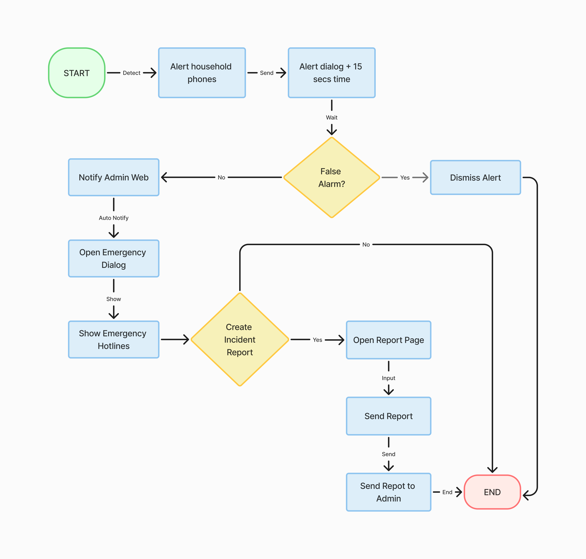
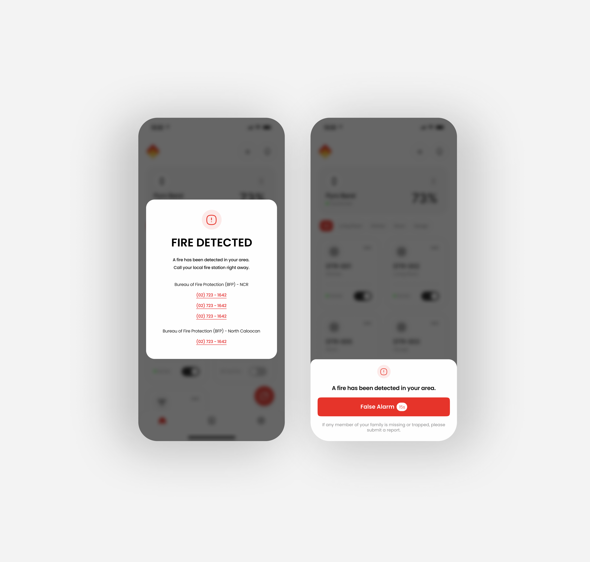
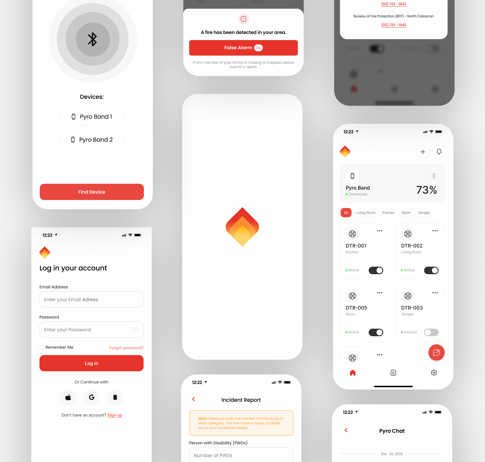

Pyro Guard

Background
Pyro Guard is a dedicated IoT ecosystem paired directly with smoke and fire detector and a custom Bluetooth-connected wearable, the Pyro Band. It provides homeowners with real-time environmental monitoring, instant device status management, and guarantees that critical alerts reach the user immediately—whether they are looking at their phone or fast asleep.

Problem
Designing an IoT safety app requires balancing two completely different user states: passive daily monitoring and high-stress emergency action. The core challenge was creating an everyday dashboard that feels clean, unobtrusive, and approachable, while ensuring the "Active Alert" state is virtually foolproof. During a fire, users are panicked and operating under extreme cognitive load, meaning the UI must strip away all distractions so they can trigger emergency protocols or dismiss false alarms in a fraction of a second.

Solution
Key UI/UX improvements focused on cognitive speed, clear visual hierarchies, and preventing user error during high-stress events. For everyday use, I designed a soft-minimalist dashboard utilizing a dark charcoal "Hero" card for the primary PyroBand device, instantly establishing hardware importance without cluttering the screen.

Outcome
Key UI/UX improvements focused on cognitive speed, clear visual hierarchies, and preventing user error during high-stress events. For everyday use, I designed a soft-minimalist dashboard utilizing a dark charcoal "Hero" card for the primary PyroBand device, instantly establishing hardware importance without cluttering the screen.